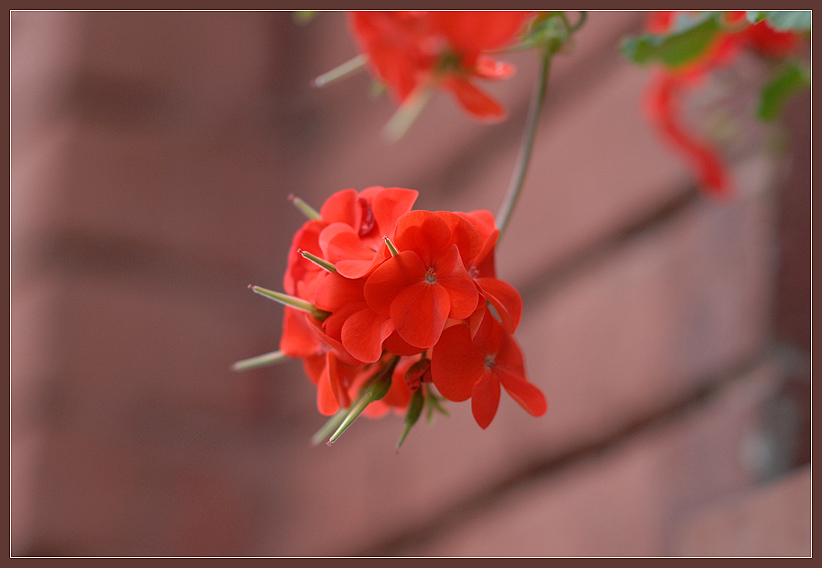

Гера́нь, или жураве́льник (лат. Geranium) — род семейства Гераниевые. Всего известно более 400 видов трав и полукустарников, рассеянных по всему миру. Герань будет расти в любой незаболоченой почве. Некоторые из видов не зимостойки в холодных районах и выращиваются в специализированных садах, таких как альпинарии.
Листья на черешках, рассечены весьма различно, пальчатораздельные или пальчатолопастные, редко перистые с тремя—пятью листочками. Листья многих видов мягковолосистые.
Цветоносы с одним—тремя цветками. Цветки правильные, крупные и красивые, из пятилистной распростёртой чашечки и пяти одинаковых почти круглых лепестков венчика, тоже распростёртых почти в плоскость; окраска их белая, пурпуровая, синяя и фиолетовая разных оттенков. Тычинок десять, обычно все с пыльниками.
Плод представляет собой модифицированную коробочку с сохраняющимися чашелистиками — стеригму, которая раскрывается от нижней части к верхней.